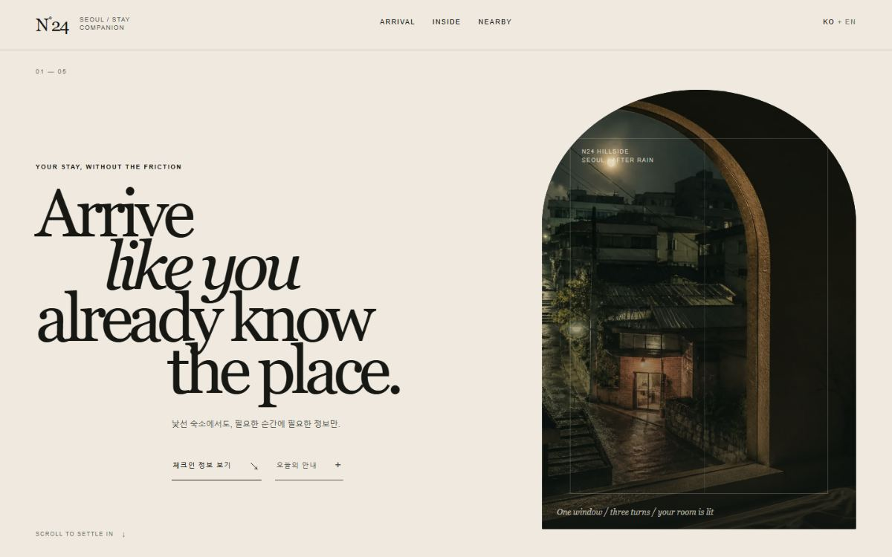
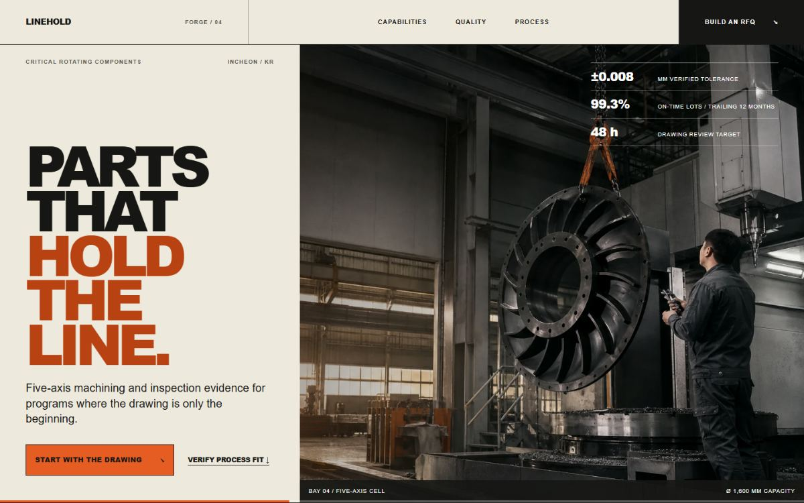
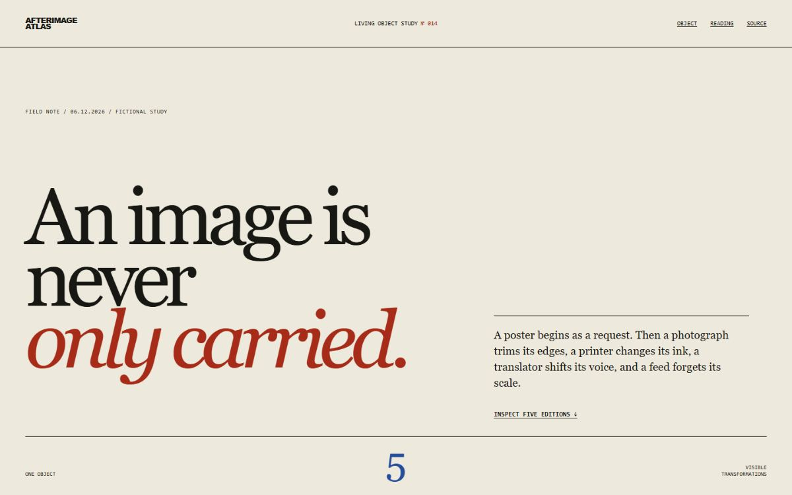
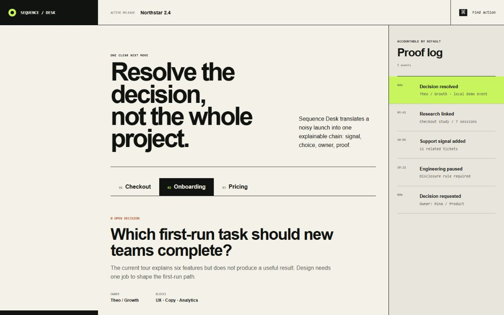
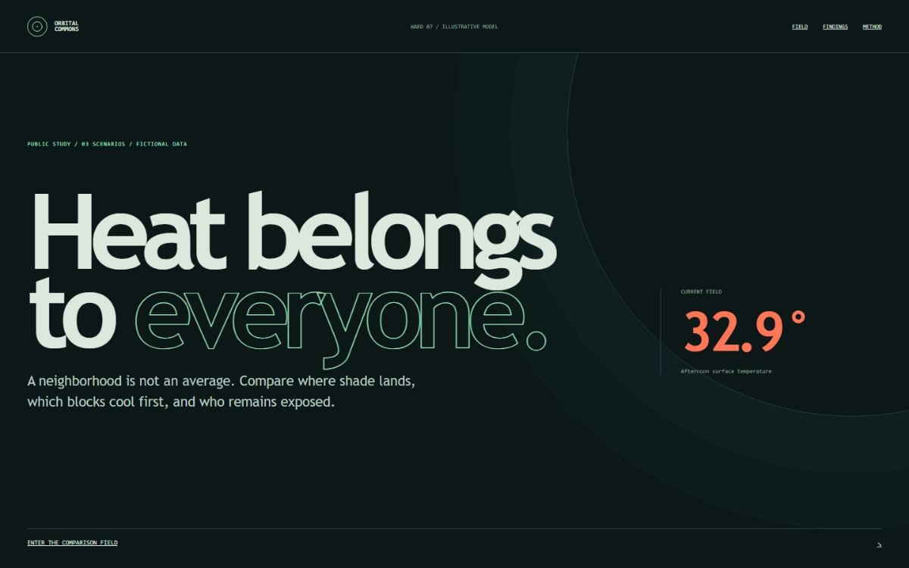

Open experiment ↗CASE 01
Nocturne Concierge
Editorial hospitality · atmospheric restraint · intent-led motion
- Internal score
- 92.8
- Field evidence
- Pending
Open design infrastructureSeoul / Worldwide
A practical operating system that routes an AI agent through discovery, art direction, implementation, critique, accessibility, and rendered QA. Not another prompt pack.
npx --yes github:Lrinvl1203/world-class-web-design-os install --agent codex
Critical content survives without motion. Every flourish needs a communication job.
01 / See it work
The same operating system produced two deliberately different website archetypes. The demo is proof of operation, not external validation.
Compare your normal workflow with Web Design OS using the same brief, assets, agent, model, and time budget. Publish the raw evidence—even when the OS loses.
Run the Same Brief Challenge ↗02 / Rendered proof
Five deliberately different archetypes exercise the same system. Scores are internal Design Quality evaluations, not field validation.

Open experiment ↗Editorial hospitality · atmospheric restraint · intent-led motion

Open experiment ↗Industrial commerce · dense utility · responsive recomposition

Open experiment →Editorial culture · object-led inspection · five-state narrative

Open experiment →Product UI · component states · accountable launch workflow

Open experiment →Civic data · purposeful pseudo-3D · semantic HTML fallback
03 / Operating method
The system activates only the skills needed for the job, keeps implementation and critique separate, then records reusable defects through a controlled proposal loop.
DESIGN DISCOVERY
Define the audience, primary action, content hierarchy, constraints, and questions that must be true before visual work begins.
04 / The difference
Typical prompt pack
World-Class Web Design OS
05 / Start here
After installation, a plain-language website request automatically starts with the orchestrator.
npx --yes github:Lrinvl1203/world-class-web-design-os install --agent codex“이 제품의 웹사이트를 디자인하고 구현해줘.”
The skill system is installed to your global Codex skills directory. Add --overwrite when updating an existing installation.
06 / Trust model
Semantic structure, keyboard reachability, visible focus, target sizing, reduced motion, and axe checks are release gates.
Mobile is assigned a new hierarchy and interaction model instead of receiving a mechanical desktop stack.
Daily sources create dated proposals. Core skills change only after evidence, regression checks, and human adoption.
Internal scores, automated checks, and field evidence are separate signals. One never impersonates another.
OPEN SOURCE / MIT